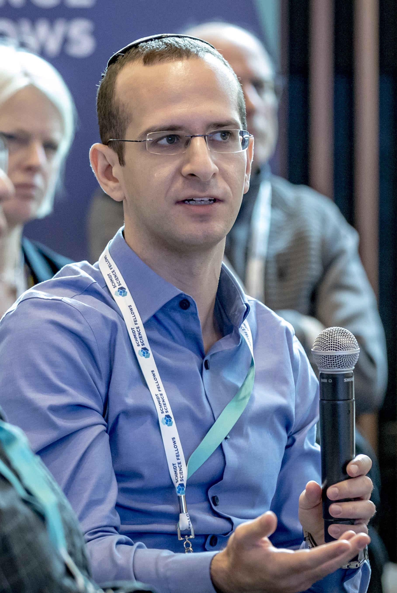

I am currently a Fulbright Scholar in Prof. Joseph E. Subotnik's group in Princeton University, the Department of Chemistry.
I pivoted to computational chemistry as a
Schmidt Science Fellow (postdoctoral) in Prof. Barak Hirshberg's group at the School of Chemistry, Tel Aviv University, where I worked primarily on path integral molecular dynamics simulations.
My PhD was in computer science, as part of the Programming Languages group at Tel Aviv University, advised by Prof. Mooly Sagiv and Prof. Sharon Shoham.
My research interests include molecular dynamics simulations, path integral molecular dynamics, quantum dynamics, electronic structure, and quantum materials; also program analysis and verification, formal logic, and the correctness of concurrent data structures.
My PhD thesis was about a theoretical understanding of how invariant inference algorithms operate, and how (unexpectedly) this has a lot to do with machine learning theory. It was recognized with the 2024 ETAPS Doctoral Dissertation Award
[slides]
[earlier video from the Simons institute] [ETAPS blog interview].
My MSc thesis proved the surprising strength of simple quantifier instantiation schemes for automatic deductive verification of quantified invariants in first-order logic.
Here is my most impactfaul scientific contribution to humanity so far.
About
Publications
Computational Chemistry
-
Periodic Boundary Conditions for Bosonic Path Integral Molecular Dynamics
J. Chem. Phys. 2025 [paper] -
Defect Positioning in Combinatorial Metamaterials
Phys. Rev. Research 2025 [paper] -
i-PI 3.0: a flexible and efficient framework for advanced atomistic simulations
J. Chem. Phys. 2024 [paper] -
Quadratic Scaling Bosonic Path Integral Molecular Dynamics
J. Chem. Phys. 2023 [paper]
[slides]
[video]
[paper]
[slides]
[video]
J. Chem. Phys. Best Paper by an Emerging Investigator 2023 (announcement).
Computer Science
-
mypyvy: A Research Platform for Verification of Transition Systems in First-Order Logic (Tool Paper)
CAV 2024 [paper] -
SAT-Based Invariant Inference and Its Relation to Concept Learning (Invited Paper)
RP 2022 [paper] -
Invariant Inference With Provable Complexity From the Monotone Theory
SAS 2022 [paper] [slides] [video] -
Property-Directed Reachability as Abstract Interpretation in the Monotone Theory
POPL 2022 [paper] [slides] [video] [longer video] -
Learning the Boundary of Inductive Invariants
POPL 2021 [paper] [slides] [video] -
The Wonderful Wizard of LoC: Paying attention to the man behind the curtain of line-of-code metrics
Onward! Essays 2020 [paper] [video] -
Proving Highly-Concurrent Traversals Correct
OOPSLA 2020 [paper] [slides] [video] -
Complexity and Information in Invariant Inference
POPL 2020 [paper] [slides] [video] -
Inferring Inductive Invariants from Phase Structures
CAV 2019 [paper] [slides] [video] -
Order out of Chaos: Proving Linearizability Using Local Views
DISC 2018 [paper] [slides] -
Bounded Quantifier Instantiation for Checking Inductive Invariants
TACAS 2017, LMCS 2019 [paper] [paper (conference)] [slides] -
Property Directed Reachability for Proving Absence of Concurrent Modification Errors
VMCAI 2017 [paper]
Teaching

Photo credit: Adrian Travis